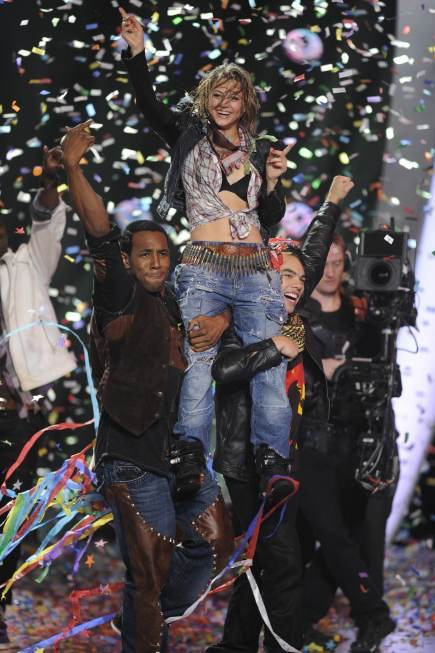

Co-founder
Lauren Spencer
Dancer, actor and choreographer.
Winner, So You Think You Can Dance, Season 7.
In 2010, Lauren won Season 7 of So You Think You Can Dance. The confetti came down and the work started.
She has spent her career since in rehearsal rooms, audition lines and borrowed studios, and she works and teaches in Los Angeles and across the country. Spencer Haus is the place she wanted the whole time: one address where working artists can train, tape, record and find their people.
“I know I’ve often needed a place like this in my career. Somewhere to be able to meet up with other creatives and unwind. Somewhere to play and work alongside other like-minded people. Somewhere to nourish the whole creative self all in one place. I want to be able to create that home for myself and my community.”
Draft slot for Lauren. Still to add: what she has done since the show, where the name comes from, and her Instagram handle. Replace this box before the page goes live.